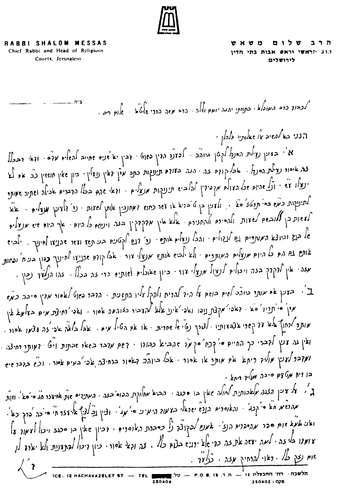
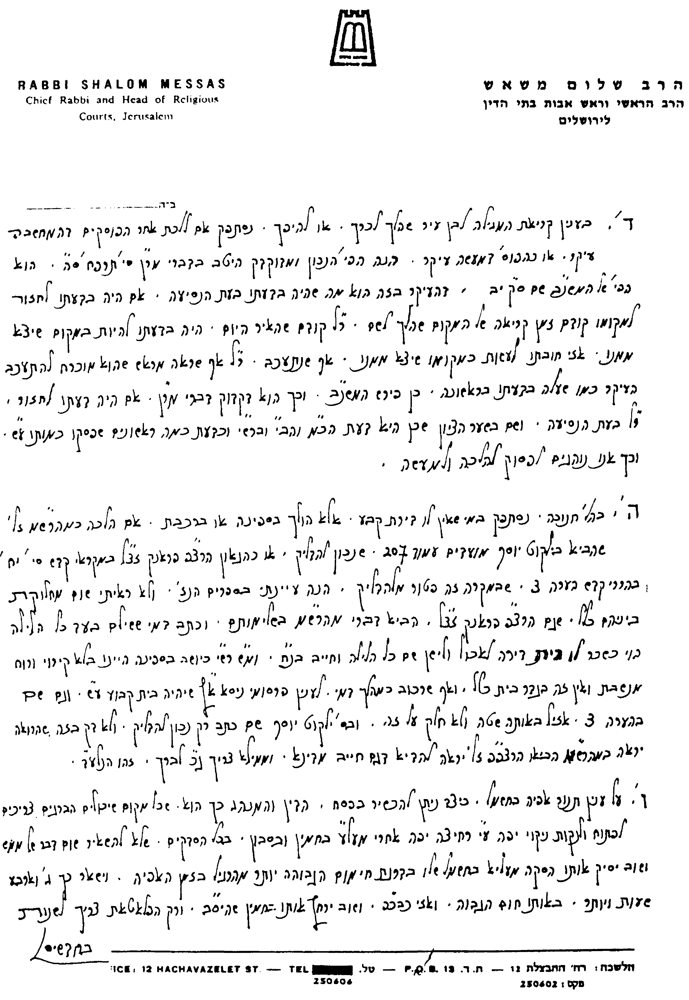
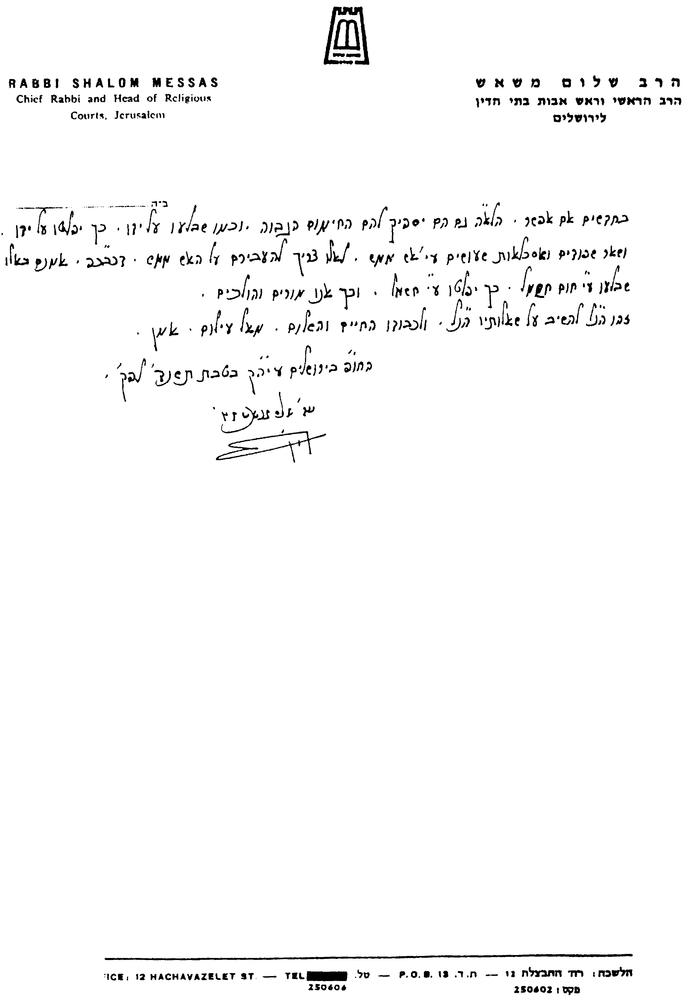

בס"ד טבת תשנ"ד
לכבוד
הרב הגדול, מעוז ומגדול, סיני ועוקר הרים, וטוחנן זה בזה,
הרה"ג רבי שלום משאש שליט"א
הרב הראשי וראש אבות בתי הדין פעיה"ק ירושלים ת"ו.
כיון שכתבנו כמה קונטרסים בס"ד בעניני הלכות המועדים, רצינו לשאול את כת"ר שליט"א כמה שאלות בענינים אלה, כדי לפרסמן במהדורות הבאות, וכפי שפרסמנו כבר דעת כת"ר בספרנו "מקראי קודש" הלכות פסח.
בענין יוה"כ:
א. מאיזה גיל יש לחנך קטן שלא לנעול נעלי עור ביוה"כ. האם מעת שמתחיל ללכת, או מגיל 6-7 שנים, או גיל אחר (עפ"י שו"ע תרט"ז, א', וספר שמירת שבת כהלכתה מהדו"ק פל"ב סט"ז).
ב. המותר ביוה"כ לשים בושם על היד להריח ולהקל עליו התענית, או שאסור הדבר מדין סיכה (עפ"י שו"ע סי' תרי"ד ס"א. וראה כה"ח סי' קכ"ח סקמ"ד).
ג. המותר לחולה שאין בו סכנה לאכול ביוה"כ בהזנה מלאכותית, שאין זו אכילה כדרכה (שבשו"ת אחיעזר ח"ג סי' ס"א ושו"ת מהרש"ם ח"א סי' קכ"ג מתירים. והגר"ש ישראלי שליט"א בעמוד הימיני סי' מ"ג אוסר. וראה עוד ציץ אליעזר ח"י סי' כ"ה פרק כ"א).
בענין חנוכה:
א. האם הלכה כמהרש"ם (בתשובותיו ח"ד סי' קמ"ו), שאף מי שאינו גר בדירת קבע, אלא נוסע בספינה או ברכבת וכדו', צריך להדליק נרות חנוכה (וכ"פ בילקוט יוסף הל' מועדים עמ' 207 סעיף כ"ה). או הלכה כחולקים, וסוברים שבמקרה זה פטור מלהדליק (ראה מקראי קודש לגרצ"פ פראנק סי' י"ח בהררי קודש הערה 3, וסי' כ"ה הערה 4).
בענין פורים:
א. בן כרך (ירושלמי) שנסע לעיר (תל-אביב), ובדעת לחזור לירושלים לפני עלות השחר של יום י"ד באדר. אך לבסוף נשאר בעלות השחר של יום י"ד בעיר. האם הלכה כפוסקים דאזלינן בתר מחשבתו, ואז אינו צריך לקרוא המגילה ביום י"ד, או כפוסקים דאזלינן בתר מעשה, ואז צריך לקרוא המגילה ביום י"ד (על פי השו"ע סי' תרפ"ח סעי' ה', והנו"כ שם). וכן הדין להיפך, בבן כרך שנסע לעיר ודעתו לחזור לאחר עלות השחר של יום י"ד, ולבסוף חזר לפני עלות השחר של יום י"ד.
ב. על פי מה שכתב כה"ח (בסי' תרצ"ד ס"ק ט"ו וי"ח, ובסי' תרפ"ח סקנ"ד, ובסי' תרצ"ה סק"נ) המותר לתת מתנות לאביונים לפני פורים, בתנאי שישתמשו בזה רק ביום פורים עצמו.
בענין פסח:
א. כיצד ניתן להכשיר תנור אפיה לפסח.
אודה לכת"ר שליט"א אם יטרח להשיבני במהרה על דברי, כיון שמעונין אני לפרסם דעתו, דעת עליון, ואין שמחה כהתרת הספקות, והמתירן שכמ"ה.
בברכת התורה מהררי ציון
משה הררי
ישיבת מרכז הרב
פעיה"ק ירושלים תובב"א


